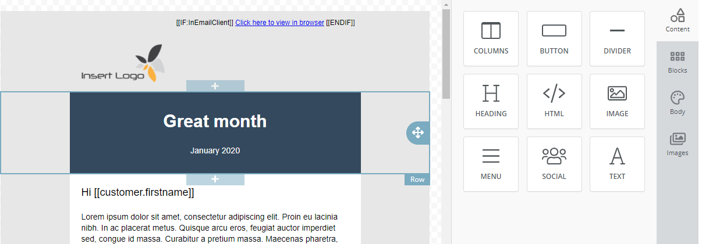

Drag and drop editor

In the Content step you can edit the appearance and content of the message.
You can insert text and images (and other content) in the columns and rows of the message.
You can define format/layout (such as font type and size, colours and margins) at global level (the whole message) or by individual sections.
You can easily drag and drop content from the side-panel (menus, buttons, SoMe links, html content, and header and footer blocks).
SuperOffice Marketing is supplied with many ready-made message templates), and you can easily move content around to get the appearance you want. Save frequently used content as blocks to save time.
Tip
We normally recommend a maximum width of 600 pixels for mailings. You can also check what the mailing will look like, on smart phones for example, by clicking Mobile ( ) in the menu in the lower left corner. See also Customise the message for display on mobile devices.
) in the menu in the lower left corner. See also Customise the message for display on mobile devices.
Edit columns and blocks/sections
When you click a section (column, content box, row etc.), buttons with editing options appears. The side-panel displays editing options for the selected section.
A blue frame is shown around the selected element, so that you always know which part of the message you are editing.
If you click text content, a text editing toolbar is displayed.
The global menu is always displayed at the bottom left of the content area.
See Edit content.
Edit text and images
Edit text, insert images and add other content by clicking a section in the message. Use the text editing toolbar and the side-panel to edit the selected section.
Insert new content
In the side-panel, you can drag and drop elements from the Content section to the message. You can also click + over or under a row to insert a new row.
Move, copy and delete content
You can select a section and use the buttons to move (  ), duplicate (
), duplicate (  ) and delete (
) and delete (  ) it.
) it.
Edit format and layout
The appearance and properties of the message (such as font type and size, colours and margins) can be defined at global level (the whole message) or by section (as described above).
To edit the message at a global level, select Body ( )in the side-panel.
)in the side-panel.
Tip
Use standard fonts for the best legibility with any e-mail client or web browser.
Menu overview
Below is an overview of the various functions in the Content step.
Side-panel
The side-panel contains the following main sections:
| Icon | Name | Function |
|---|---|---|
| Content | This section contains various content types, such as columns, text sections, images, menus/buttons and SoMe links. Drag and drop content from this section to the message. Click the content to edit it in the side panel. See Edit content. | |
| Blocks | This section contains saved content blocks such as headers and footers. Drag and drop content from this section to the message. To save a content block, click a row and select Save block ( |
|
| Body | In this section you can edit the global properties and layout for the message. If you have defined specific properties for individual sections, these are not overridden by global properties. |
|
| Images | In this section you can find millions of images to use in your mailing. Drag and drop content from this section to the message. See Insert images in the message. |
Note
If the Images ( ) section is not visible, this preference may have been disabled due to organisational privacy rules.
) section is not visible, this preference may have been disabled due to organisational privacy rules.
See also Add content.
Global menu
From the global menu, you can preview, undo or repeat actions, and se how the message looks on desktop or mobile. This menu is always displayed at the bottom left in the content area (see Edit message content – overview).
| Icon | Name | Function |
|---|---|---|
| Undo/Redo | Click here to undo the last action or redo an undone action. | |
| Preview | Click here to preview the message on a desktop or mobile display. | |
| Toggle showing for desktop or mobile devices | Click here to see what the appearance is like on a desktop or smart phone. |
Context menu
When you click a section in a message, you get access to various functions for the section.
| Icon | Name | Function |
|---|---|---|
| Add row | Click here to add a row below or above the selected section. | |
| Move | Click and drag to move the section. | |
| Delete | Click here to delete the section. | |
| Duplicate | Click here to create a copy of the section. | |
| Save block | Click here to save the selected section as a block. This is a smart way to reuse content (like headers and footers) across messages. |